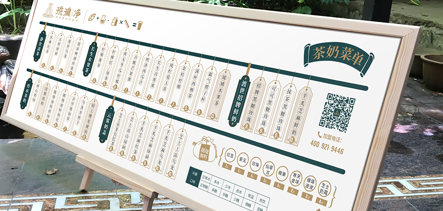
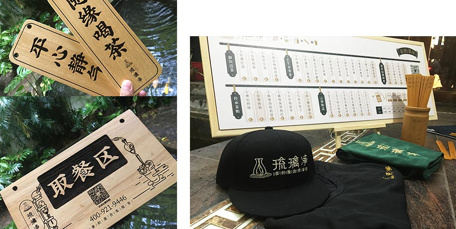
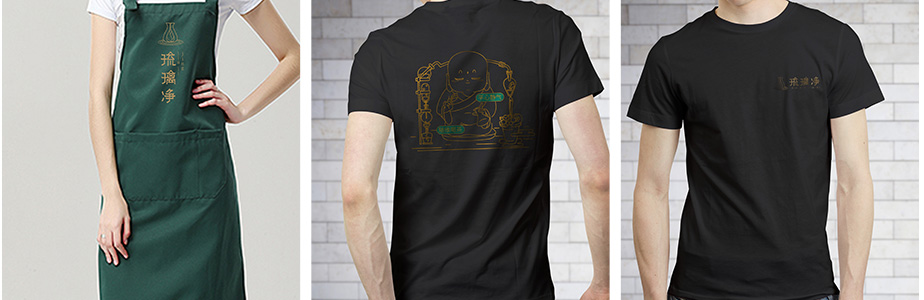

琉璃净的运营团队由数名曾任职于全国百强餐饮企业的人员组成的金牌团队，负责加盟店整个流程，从选店址到后期的装修、培训。负责监督跟踪门店，不定期上门测评降低投资风险，根据不同店⾯经营过程中遇到的问题及时调整改进，协助加盟商落实各阶段营销方案的策划及宣传活动的推广。

琉璃净研发团队专注于饮品行业10余年的时间，有着丰富的饮品研发经验，对研发过程严格把控，通过严谨的研发过程确保成品的质量。负责根据国家和地方的相关规范、规程、规定及标准，确保研发的成品能符合国家的要求。对市场上新技术、新设备、新工艺、新经验进行深入调研，能准确把握消费者的喜好，并根据市场变化研发新品，保证琉璃净产品的口味符合消费者的口味。



